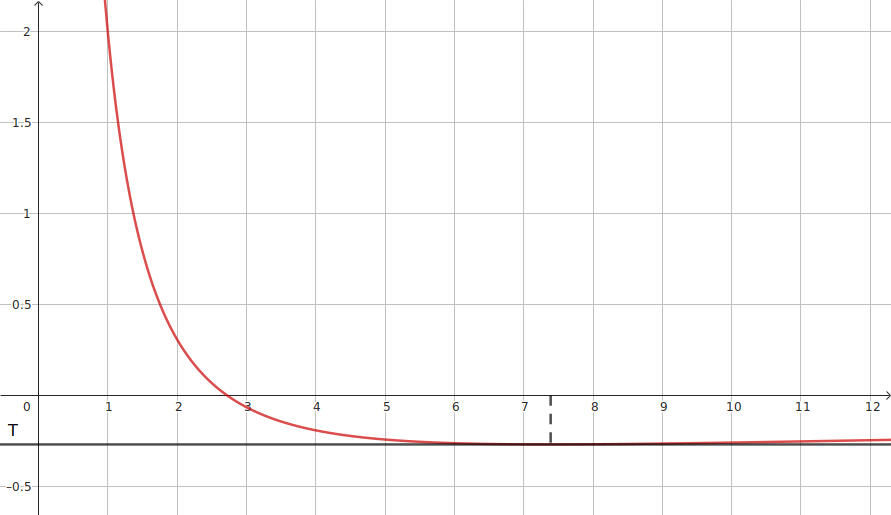
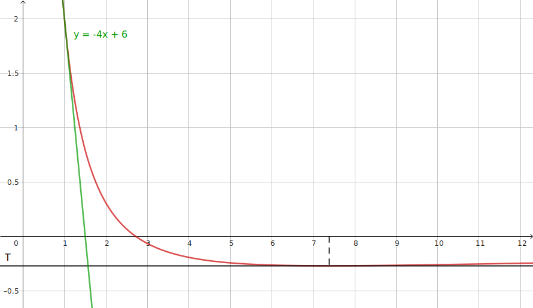

On considère la fonction \(f\) définie sur l’intervalle ]0; +∞[ par \(f(x) = \left(2 -
\ln(x)\right)
\times \ln(x)\), où \(\ln\) désigne la fonction logarithme naturel ou népérien.
On admet que la fonction \(f\) est deux fois dérivable sur ]0; +∞[.
On note \(\mathcal{C}\) la courbe représentative de la fonction \(f\) dans un repère
orthogonal.
On note \(\mathcal{C}'\) la courbe de la fonction \(f'\), dérivée de
\(f\).
\(\mathcal{C}'\) est tracée sur
la figure ainsi que son unique tangente horizontale (T).

Par lecture graphique, avec la précision que permet le tracé ci-dessus, donner :
le coefficient directeur de la tangente à \(\mathcal{C}'\) au point d’abscisse 1.
La fonction \(f\) est elle convexe sur [1;2] ? Justifier.

\(f\) n'est pas convexe car sa dérivée est décroissante sur [1;2].
Calculer la limite de la fonction \(f\) en +∞.
Calculer \(\displaystyle\lim_{x\to0^+}f(x)\) et interpréter graphiquement le résultat
(remarque : parler d'«interprétation graphique» d'une limite revient à parler d'asymptote).
\(
\displaystyle\lim_{x\to0^+}
\left(2 - \ln(x)\right) \times \ln(x)
=
\left(2--\infty\right)\times-\infty
=
+\infty\times-\infty
=
-\infty
\)
;
On en déduit que l'axe vertical est asymptote à la courbe \(\mathcal{C}\) en
0+.
Montrer que pour tout réel \(x\) appartenant à ]0; +∞[, \(f'(x)=\dfrac{2(1-\ln(x))}{x}\).
En déduire, en justifiant, le tableau de variations de la fonction \(f\) sur ]0; +∞[.
On utilise la dérivée d'un produit, puis on met sur le même dénominateur (qui est \(x\))
:
\(
f'(x)
=
\left(0-\dfrac{1}{x}\right)\ln(x)+\left(2-\ln(x)\right)\dfrac{1}{x}
=
\dfrac{-\ln(x)+2-\ln(x)}{x}
=
\dfrac{2-2\ln(x)}{x}
=
\dfrac{2\left(1-\ln(x)\right)}{x}
\)
En déduire, en justifiant, le tableau de variations de la fonction \(f\) sur ]0; +∞[.
Comme \(x>0\) et 2>0, \(f'(x)\) est du signe de \(1-\ln(x)\). Or cette dernière
quantité s'annule lorsque \(\ln(x)=1\), soit \(x=\textrm{e}\). On obtient le tableau
suivant :
\(x\)
0
e
+∞
\(f'(x)\)
+
0
-
\(f\)
2
↗
↘
-∞
-∞
Montrer que la courbe \(\mathcal{C}\) coupe l’axe des abscisses en deux points exactement,
dont on précisera les coordonnées (justifier par des propriétés de \(f\)).
Les ordonnées \(y\) de ces points sont évidemment nulles (sur l'axe \(y=0\)). Il reste à trouver
leurs abscisses.
On résout :
\(\begin{array}{cl}
& f(x)=0 \\
\Leftrightarrow
& 2-\ln(x)=0 \textrm{ ou } \ln(x)=0 \\
\Leftrightarrow
& \ln(x)=2 \textrm{ ou } x=\textrm{e} \\
\Leftrightarrow
& x=\textrm{e}^2 \textrm{ ou } x=\textrm{e} \\
\end{array}\)
On note \(f''\) la dérivée seconde de \(f\) et on admet que pour tout réel \(x\)
appartenant à ]0;+∞[,
\(f''(x)=\dfrac{2(\ln(x)-2)}{x^2}\).
Déterminer par le calcul le plus grand intervalle sur lequel la fonction \(f\) est convexe
et préciser
les coordonnées du point d’inflexion de la courbe \(\mathcal{C}\).
On résout \(f''(x)\geqslant 0\), ce qui revient, comme \(x^2\)et 2 sont positifs, à
\(\ln(x)\geqslant 2\), soit \(x\geqslant \textrm{e}^2\) en appliquant l'exponentielle,
croissante. La fonction \(f\) est donc convexe sur [e2;+∞[.
Tourner S.V.P.
Géométrie (10 points)
Cet exercice est un questionnaire à choix multiples.
Pour chacune des questions suivantes, une seule des quatre réponses proposées est
exacte.
Une réponse exacte rapporte un point. Une réponse fausse, une réponse multiple ou l’absence de réponse à
une
question ne rapporte ni n’enlève de point. Pour répondre, indiquer sur la copie le numéro de la question
et
la lettre de la réponse choisie. Justifier le choix rapidement.
L’espace est rapporté à un repère orthonormé \(\left(O; \overrightarrow{i} , \overrightarrow{j},
\overrightarrow{k}\right)\).
On considère :
les points \(A(−1; −2; 3)\) , \(B(1; −2; 7)\) et \(C(1; 0; 2)\) ;
la droite Δ de représentation paramétrique :
\(\left\{\begin{array}{l}
x = 1 − t \\
y = 2 \\
z = −4 + 3t \\
\end{array}\right.\)
, où \(t\in ℝ\) ;
le plan P d’équation cartésienne : \(3x + 2y + z - 4 = 0\) ;
le plan Q d’équation cartésienne : \(-6x - 4y - 2z + 7 = 0\).
Question 1 : Lequel des points suivants appartient au plan P ?
R(1; −3; 1) ;
S(1; 2; −1) ;
T(1; 0; 1) ;
Il vérifie l'équation de P.
U(2; −1; 1).
Question 2 : Le triangle \(ABC\) est :
équilatéral
rectangle isocèle
isocèle non rectangle
rectangle non isocèle
en A :
\(\overrightarrow{AB}\cdot\overrightarrow{AC}=0\) ; toutes les longueurs des côtés sont
différentes.
Question 3 : La droite ∆ est :
orthogonale au plan P;
sécante au plan P ;
incluse dans le plan P ;
strictement parallèle au plan P ;
pour \(t=0\), le point n'est pas dans P ; le
vecteur directeur de la droite et le vecteur normal du plan P sont orthogonaux, donc la
droite est strictement parallèle au plan.
Question 4 : On donne le produit scalaire
\(\overrightarrow{BA}\cdot\overrightarrow{BC} = 20\).
Une mesure au degré près de l’angle ABC est :